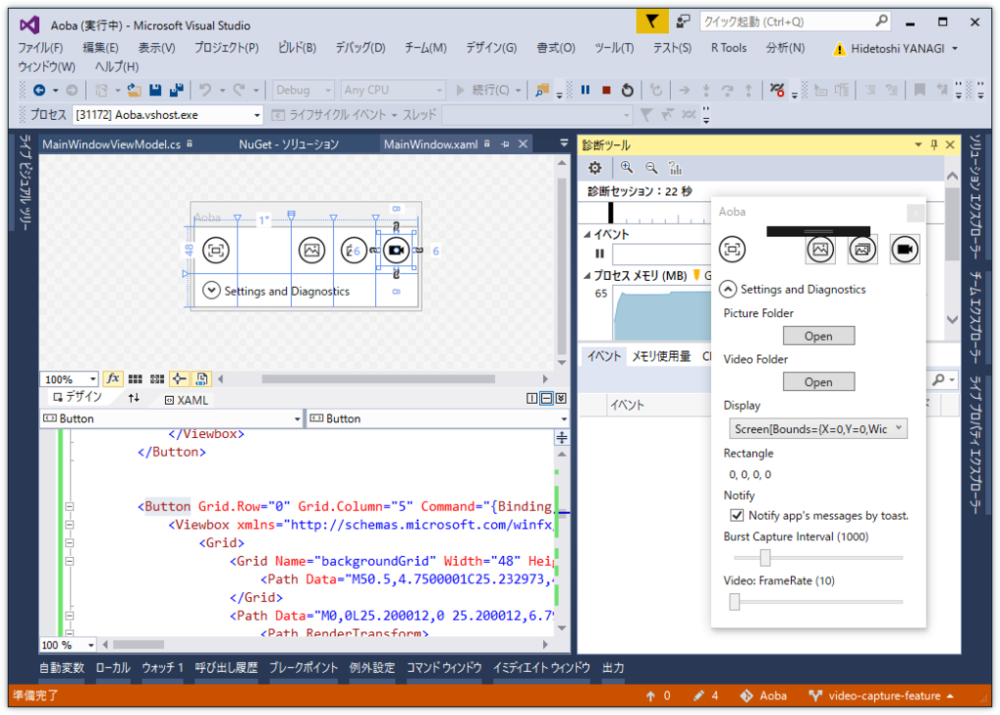
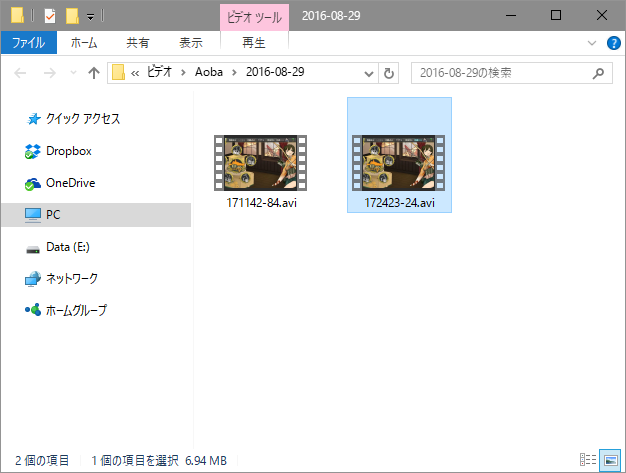

Aoba 1.3.0：艦これの画面をビデオキャプチャーできるようにした / Screna っていうライブラリが超便利
公開日：

艦これの画面を音声付きで動画キャプチャーできるようにしたよ。それに伴い、UI をいろいろ変更。

動画は My Video\Aoba に保存される。もちろん、ボタン一発で開けるようにしてある。フレームレートは弄れるけど、今のところフォーマットは AVI（MotionJPEG）で固定。 設定画面作るのめんどいからね、しょうがないね。
スクリーンキャプチャー用のライブラリ Screna
今回は Screna というライブラリのお世話になった。
NuGet で簡単にインストールできる点、動画キャプチャーをサポートしている点などがいい感じ。C# でキャプチャーする方法はいろいろ紹介されてるけど、現時点ではこれが割とモダンだと思った。FFmpeg で MP4 圧縮もできるみたいだけど、今回はそこまでは試していない。
基本的な使い方はこんな感じ（公式のサンプルそのまま）。
まず AVI サポートのために Screna.SharpAvi を NuGet でインストール。
Install-Package Screna.SharpAvi
次にネームスペースを追加。
using Screna; using Screna.Avi;
あとはコードをゴリゴリ書いていくだけ。
// どの画像をとってくるかを決める IImageProvider を初期化 var provider = new ScreenProvider(); // デスクトップ全体をキャプチャー// 動画を書き込む AviWriter を初期化 var VideoWriter = new AviWriter("output.avi", AviCodec.MotionJpeg);
// レコーダーを作って録画開始 var Recorder = new Recorder(VideoWriter, provider, 10);
Recorder.Start();
// なにかの処理
Recorder.Stop();
これだと音声は録音できないけど、こうすればループバックも記録できる。Screna.NAudio だか何だかのパッケージを追加する必要があると思う。
// IImageProvider を初期化 // 今回は矩形をキャプチャーするやで // ほかにも Active Window のプロバイダーがあるんかな？ // Overlay も付けられる。透かしみたいなもんやろか。試してない var imageProvider = new RegeionProvider(rect); // AudioProvider を用意（デスクトップで再生されてる音） var audioProvider = new LoopbackProvider(); var videoWriter = new AviWriter( "output.avi", AviCodec.MotionJpeg, audioProvider ); var Recorder = new Recorder(videoWriter, imageProvider , 10); Recorder.Start(); // なにかの処理 Recorder.Stop();
ほかにも Gif キャプチャーなんかもできるみたいなので、取り込んでいこうと思う。